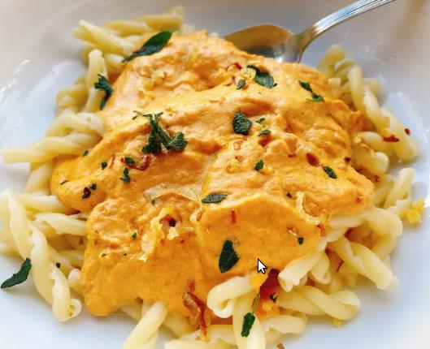

Pumpkin Sage Pasta

Pumpkin Sage Pasta
A fall inspired pasta dish, with pumpkin and sage.
Ingredients
- 1 tablespoon olive oil
- 1 medium shallot, thinly sliced
- 2 cloves garlic, minced
- ½ teaspoon crushed red pepper flakes (Optional)
- 8 chopped fresh sage leaves
- 1 cup 2% milk
- ½ cup half-and-half
- 1 (15 ounce) can pumpkin puree
- 1 teaspoon salt, or to taste
- ½ teaspoon freshly ground white pepper
- 8 ounces gemelli pasta, cooked and drained
Instructions
- Heat oil in a large sauté pan over medium heat.
- Add shallot, garlic, and red pepper flakes. Cook, stirring occasionally, until shallots are crispy, about 5 minutes.
- Add sage, and cook for 30 seconds, being careful so sage doesn't burn.
- Remove mixture to a paper towel lined tray.
- Add milk, half-and-half, pumpkin, salt, and pepper to the same pan. Cook and stir over medium heat until a smooth, creamy sauce forms, about 2 minutes. Cook until thoroughly heated through.
- Divide cooked gemelli pasta amongst 4 plates. Top with pumpkin sauce and sprinkle reserved shallot mixture on top.
Notes:
You can use vegetable broth instead of half and half. Just adjust the salt accordingly